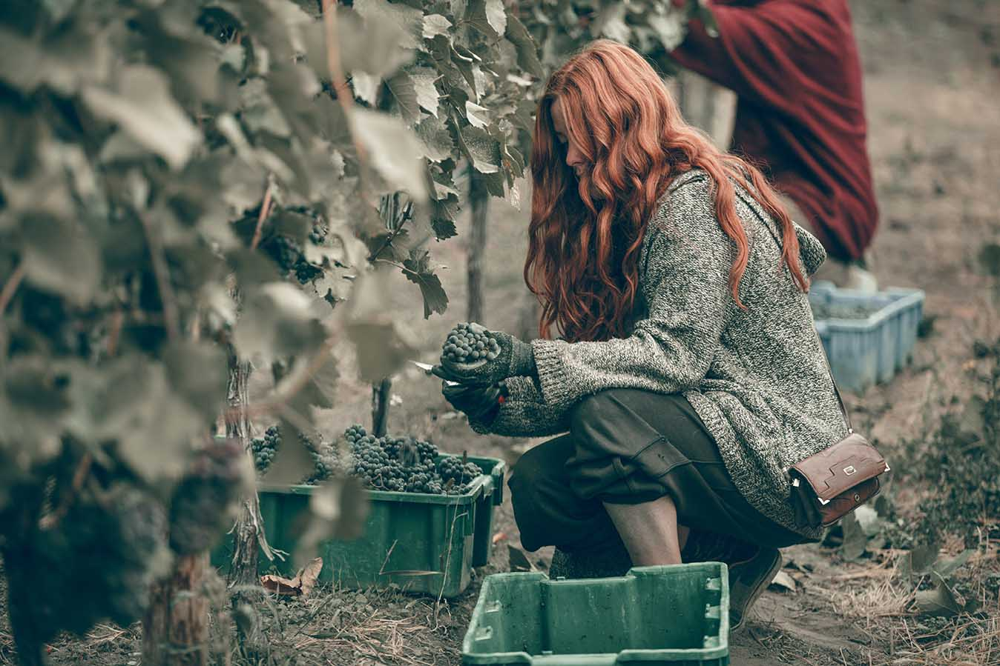
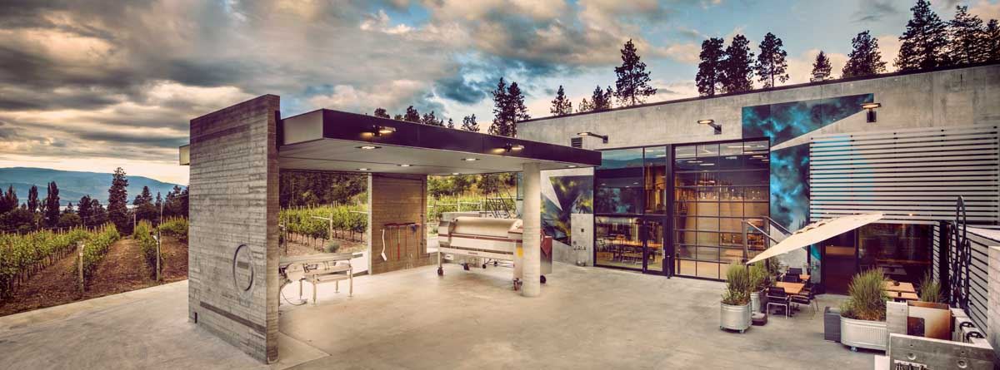
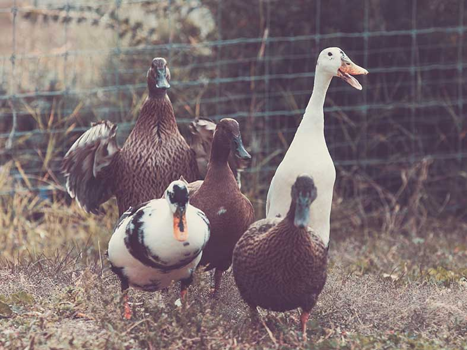
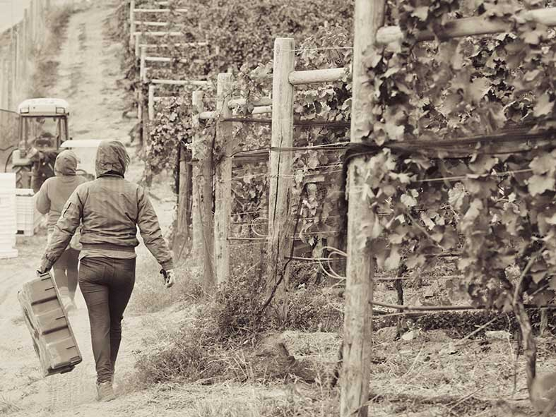
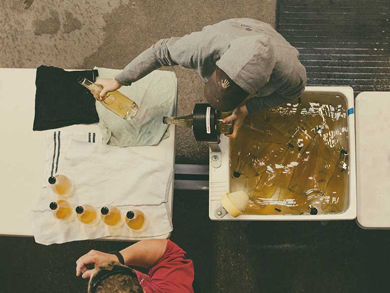

Natural and organic wines celebrated as the new Okanagan
Welcome to Okanagan Crush Pad Winery
Summerland,BC
Okanagan Crush Pad is committed to making wines that are pure Okanagan. Wines that celebrate the distinctive beauty and exceptional micro-climates and geology of our vineyards. The Summerland winery, owned by Christine Coletta and Steve Lornie, is located on the 10-acre Switchback Organic Vineyard site overlooking Lake Okanagan. In addition to our own flagship wines, Haywire and Narrative, Okanagan Crush Pad crafts super-premium wines for a number of other BC wineries. As the Okanagan's first purpose-built custom wine-making facility, Okanagan Crush Pad is taking the valuable knowledge and advice of our international wine consultants and using it to help other BC wineries achieve wine-making excellence.



